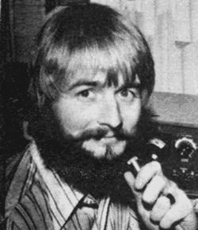

ON-THE-AIR ACTIVITIES
The opening session of the new East Coast Roundtable was highlighted by a spirited discussion about woodburning stoves. Ted Johnson (W A 1 K J I) and Arny Carmody (K2BZC), who both heat their homesteads with wood, provided most of the firsthand expertise.
One highlight of the gabfest: Ted reported that Williams College (which is located near him) has received a National Science Foundation grant to study the relative efficiency of the various woodburners now on the market. (Isn't it great to see some of that government research money finally being spent on timely, downto-earth projects!) Johnson promised to watch for the results of the study and to pass them along.
Ted-who is blessed with a strong signal, central location, and willing spirithas frequently worked the East Coast Roundtable as moderator while Randy Livsey (WB8SPT) out in Michigan has done the same for the Midwest group. Arny Carmody has also served as a moderator as has Ken Chaffee (WA1QXR)
Within the first two weeks of our new Roundtable airings, it became clear that some "fine tuning" of time and frequency would be required to make the exchanges work. Back here in the crowded eastern half of the continent, for instance, we've found the interference level in the General class portion of the band just too high for the type of armchair communication we're trying to carry on. So, by the unanimous agreement of all the participants one night, we made several changes:
Both East Coast and Midwest Roundtables now use the same frequency, 3825 kHz. This is our new "hangout" on Monday and Thursday evenings and an East Coast station calls the group at 7:00 p.m. Eastern time and members of the net who can hear and be heard join in. An hour later (7:00 p.m. Central time), a Midwest station takes over as moderator and some new voices join the discussion as others drop out. One of our hottest topics right now is the in-depth hashing over of the most significant books and articles we've been reading this winter. We hope you'll tune in and add your thoughts, if you haven't already.
As the accompanying schedule indicates, Arny Carmody has started a new "Vegetarian Net" on 80-meter CW. Anyone interested in exchanging information about the subject is invited to join him on 3695 kHz at 1:00 p.m. Eastern time on Sunday afternoons. Code speed will be kept down in the 13-to-15-wordper-minute range, and even low power should work fine if you're within 300 miles or so of Arny's location in the Finger Lakes region of upstate New York. (Carmody's mailing address is RD 3, Canandaigua, N.Y. 14424.) This is a good opportunity to get on the air with simple equipment, keep that code speed up, and dig deeper into what may be the only long-term nutritional answer for our overcrowded planet.
I don't have any heavy news to report from the West Coast Roundtable this time around but I do understand that the folks out there have been successfully using the General class portion of the band and a local starting time of 8:00 p.m. for some good MOTHER-type talk.
CANADIAN LICENSING
One Canadian reader of this magazineRob Staley of Kitchener, Ontario-recently reminded me that I haven't yet written anything about getting a ham license up here in the Maple Leaf Country.
Yes, there are differences between the procedure you must follow to go on the air legally in Canada and the roughly similar procedure (which 1 described in MOTHER NOS. 23, 24, and 25) required in the U.S.
First, Canadian regulations specify no 5-wpm Novice Class. The "beginner's" license up here is issued to individuals who've received an "Amateur Radio Operator's Certificate", given upon the successful completion of a 10-wpm code test and a theory exam of moderate complexity.
Then, after one year of operation on the air using Morse code only, an individual is entitled to take an exam for the "Advanced Amateur Radio Operator's Certificate". The code test for this one is 15 wpm and the level of theory comprehension that must be demonstrated is a bit tougher than the corresponding part of the exam taken a year before. The reward, however, is well worth the effort: a person granted Advanced Amateur status is allowed full phone privileges.
I might mention that volunteer examiners are not used in Canada. All tests are given by government radio inspectors in offices of Communications Canada. And three full minutes of perfect receiving and sending-versus just one minute in the United States-are required for the code tests. Another difference: A yearly fee of $10.00 must be paid to maintain a license in Canada, whereas a single payment of $4.00 covers the full five-year term of a license in the United States.
Canadian Landed Immigrants are just as eligible as "regular" citizens to take a radio operator's exam and U.S. hams visiting north of the border can obtain a temporary authorization to operate in Canada.
If you live in Canada and you're thinking seriously about getting a license to go on the air, I suggest that you purchase a copy of the Radio Amateur Licensing Handbook, by Jim Kitchin. It's available from ALH Distributors, P.O. Box 27, Vancouver 1, British Columbia, Canada for $4.95. The book contains a name, address, and call letter listing of Canadian amateurs as well as licensing information.
For further help in tracking down hams who live in your section of Canada, contact the amateur radio clubs near you. Just as in the U.S., most large towns have such organizations and they usually conduct free code and theory classes for prospective hams. Some Canadian community colleges and vocational high schools-again, just as in the United States-are also starting to offer such classes.
CODE HINTS
The general approach to the mastery of Morse code which I prefer, and which many others have found satisfactory, was described in MOTHER NO. 25. It involves memorization of the code through its sound patterns only with no attempt to commit visual dots and dashes to memory. (The idea being that to think of "A" as a visualized and "B" as instead of as the, sounds you actually hear over the air is to rely on an unnecessary crutch that-sooner or lateryou have to discard anyway.)
Still, there are people who do prefer to learn their code with the help of the visual patterns. And two readersJay Seckels and Dan Bailey have suggested that such folks should know about the work of a scoutmaster named Raymond Teichman.
Teichman has come up with a rather neat scheme that associates Morse code with words and pictures. He claims that only 30 minutes are required for the memorization of Morse dot-dash patterns when his technique is used. The complete system was presented in the April 1969 issue of Field and Stream and interested individuals might want to check the magazine out of their library's backissue files.
However you go about it, once you have your code memorized you're going to want to increase your copying speed. And, to do that, you need some source of accurately sent code to listen to. Commercially available tapes and records are fine for the job, except that they're generally arranged in nonsense letter combinations to keep you from memorizing their text. And that can really throw you when you finally sit down to take a code exam which involves the transmission of plain language text. (For the first time you can read what you're copying!)
One solution? The American Radio Relay League's station, W1AW, up in Newington, Connecticut, transmits code practice several times a day and is an excellent "free" source of plain language practice material. Code text at 5, 7-1/2, 10, 13, 20, and 25 words per minute is broadcast at 9:30 p.m. EST on Sunday, Tuesday, Thursday, and Saturday and at 9:00 a.m. EST on Monday, Wednesday, and Friday. Speeds of 10, 13, and 15 wpm are transmitted daily at 7:30 p.m. EST. Transmissions are made simultaneously on 1805, 3580, 7080, 14080, 21080, 50080, and 145588 kHz.
MORE ON INFORMATION SHARING
Through the use of ham radio, we can transmit information from one place to another if we know who has information they want to share. Our Amateur Radio Register (see MOTHER NOS. 31, 32, 33, and 35) helps to fill that gap. And now Randy Brink (WA7BKR) has offered to set up an additional "introductory service".
Randy would like us hams to send him a list of the worthwhile reference and learning materials we've thought good enough to add to our own personal collections. He'll then attempt to catalog the lists and put information seekers into contact with those radio operators who have the facts, figures, magazine articles, records, etc., that they want. So why not make up a list of the books, tapes, and other reference materials which have changed your life for the better-and which you have on file-and send it along to Randy? His address is RFD 2, Box 301B, Port Orchard, Washington 98366.
A FINAL NOTE
This column is going into the mail early because we're facing the prospect of a long postal strike up this way (in Canada). A two-month telephone strike just ended. These two facts-and many others that I'm sure you've observed for yourself-tell me that alternative means of communications are going to become more and more important in the future. Keep those New Direction Roundtable discussions on the air and growing!
Peace,
Cop Macdonald
99 Fitzroy Street
Charlottetown
Prince Edward Island, Canada
|
 |
|
|